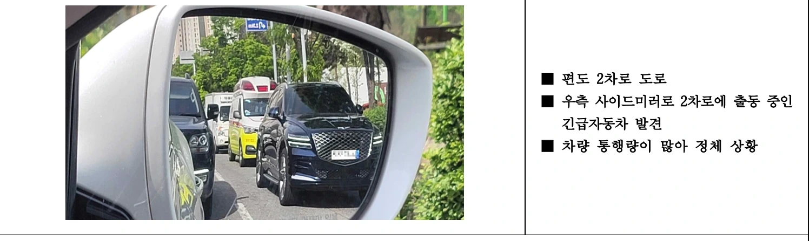

770. Which of the following are the safest ways to drive in the given situation? (Select TWO)

- ①The right of way can only be yielded in the second lane, so if you are in the first lane, there is no need to watch out for emergency vehicles behind.
- ②If there is an intersection ahead, avoid it and yield the right of way.
- ③Quickly switch to the second lane, turn on the hazard lights, and drive ahead of the emergency vehicle.
- ④If you are traveling in front of an emergency vehicle, move to the left or right side of the road and yield the right of way.
- ⑤Since you can travel faster if you follow behind the emergency vehicle, switch to the second lane and closely follow behind after the emergency vehicle passes through.
Show answer
Answer
② If there is an intersection ahead, avoid it and yield the right of way.
④ If you are traveling in front of an emergency vehicle, move to the left or right side of the road and yield the right of way.
Reference
If you spot an emergency vehicle on the way, evacuate to the left or right side of the road, or if it is an intersection, give way to avoid the intersection. It is dangerous to continue driving in the path of an emergency vehicle or to follow behind it, and it is not necessary to yield by moving to the right side of the second lane.
Reference text is a machine translation for study.